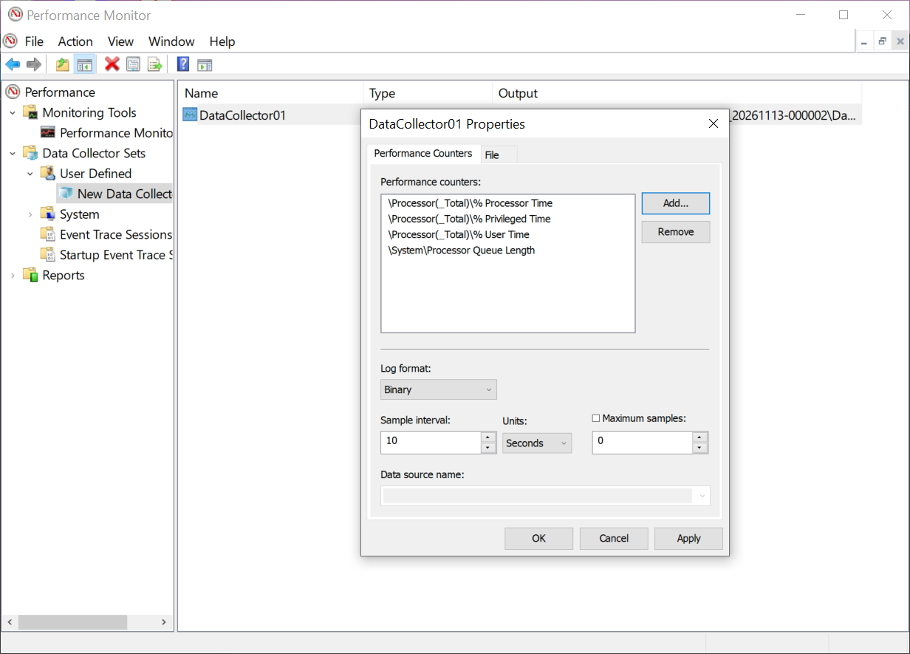

System Resource Usage Analysis
Performance Analysis — logging and analyzing CPU usage with Performance Monitor and presenting charts.
01 / Mission goal
The goal of this project is to record processor (CPU) usage over a one-hour period and analyze its chart. This reveals the CPU usage pattern, the timing and intensity of peaks, the share of user code and kernel code in the usage, and the presence or absence of a processor bottleneck. What distinguishes this project from an instant check in Task Manager is that the data is saved in a log file and can be reviewed and analyzed later.
02 / Tools and runtime environment
Performance Monitor (perfmon): a built-in Windows tool for displaying performance counter charts, both live and from a log file.
Data Collector Set: a feature for automatically recording counters into a log file (Binary format with the blg extension) with a specified sampling interval and end time.
Counters recorded:
- Processor → % Processor Time (_Total): total processor usage percentage.
- Processor → % User Time (_Total): the share of usage from user applications.
- Processor → % Privileged Time (_Total): the share of usage from the kernel and drivers.
- System → Processor Queue Length: the number of threads waiting for their turn on the processor; a sign of a CPU bottleneck.
Logging settings: a sampling interval of 5 seconds (about 720 samples per hour) and a recording duration of 1 hour.
System specifications: Intel(R) Core(TM) i7-6600U CPU - 8.00 GB (7.41 GB usable) - Windows 10 pro
03 / Execution steps
- Launching the tool: press Win + R and enter perfmon to open Performance Monitor.
- Getting familiar with the live view: under Monitoring Tools → Performance Monitor, press Ctrl + N to add the Processor → % Processor Time counter and see the live chart. This live view only shows the last few minutes and does not save anything.
- Creating a Data Collector Set: right-click Data Collector Sets → User Defined and create a new Data Collector Set (manual creation, Performance Counter type).
- Adding counters: add the four counters from the previous section with the Add option, and set the Sample interval to 5 and the unit to Seconds.
- Setting the end time: in the set's Properties, on the Stop Condition tab, set Overall duration to 1 Hours so that recording stops automatically after one hour.
- Starting the recording: run the set with Start and use the system normally for one hour (from about 6:00 to 7:00 PM).
- Reviewing the result: after the recording ends, open the log file in Performance Monitor, review the chart and the Average, Minimum and Maximum values, and take screenshots.
04 / Findings and technical analysis
The values in the table below were read approximately from the one-hour chart; for exact numbers, the Average, Minimum and Maximum of each counter must be viewed in Performance Monitor.
| Time interval | % Processor Time (approx.) | User / Privileged (approx.) | Status |
|---|---|---|---|
| 6:00 to about 6:15 | Below 10% with fluctuations up to about 20% | Both low | Low and unstable usage |
| About 6:15 to 6:53 | About 10 to 13% with short peaks up to about 35 to 46% | About 8 to 9% / about 3 to 4% | Stable level with periodic peaks |
| About 6:53 to 7:00 | About 45 to 50% | About 25 to 30% / about 20 to 25% | Jump and sustained higher level |
Overall recording statistics: Average = 14.88% · Minimum = 0% · Maximum = 51% (for % Processor Time)
- The sum of % User Time and % Privileged Time is approximately equal to % Processor Time (for example about 8 + 4 ≈ 12 in the second interval), which is consistent with the definition of these counters.
- In the last interval, in addition to User Time, the Privileged Time share also rose noticeably, and about half of the usage comes from kernel code and drivers. This pattern is usually associated with activities such as heavy file and network operations, an antivirus scan or an update.
- Cause of the jumps at about 6:15 and 6:53: not determined
- The Processor Queue Length line rises only for a few brief moments and is near zero most of the time. Since there is no sustained queue, no CPU bottleneck was observed. The scale of this counter on the chart is 100 and the height of the line differs from the real value; actual Maximum: 1.000
- The sharp peaks in the second interval repeat a few minutes apart and are short, which is consistent with periodic background tasks. Their exact source cannot be determined from this chart and requires checking in Task Manager or Resource Monitor.
05 / Problems and solutions
| Problem | Solution |
|---|---|
| The chart was empty and the Last/Average/Maximum values were shown as dashes | No counters had been added; counters were added with Ctrl + N |
| Running the Data Collector Set showed no chart | This tool only saves data to a log; the chart is viewed after the recording ends through Reports or by opening the log file. The set's counters are also separate from the live view's counters |
| The live view showed only about a minute and a half | A Data Collector Set with a Stop Condition was used for the one-hour recording |
| The % Processor Time counter had been added twice (from Processor and from Processor Information) and the lines overlapped | The duplicate was removed and only the Processor object's counter was kept |
| The Processor Queue Length value was plotted on a different scale and the line height differed from the real value | The counter's scale was taken into account when interpreting the chart, and the Average and Maximum fields were used for exact numbers |
06 / Step-by-step screenshots




07 / Summary and lessons learned
In this project, CPU usage was recorded for one hour with a Data Collector Set and examined in Performance Monitor. Usage was low or moderate for much of the time, with short peaks and a sustained jump in the final minutes, during which the kernel code's share rose. The processor queue was not sustained and no CPU bottleneck was seen.
Key lessons: the difference between the live view and long-term logging, creating and scheduling a Data Collector Set, choosing a suitable sampling interval, interpreting the User Time, Privileged Time and Processor Queue Length counters, and paying attention to counter scales when reading the chart. These skills apply directly to troubleshooting slow systems and documented reporting.